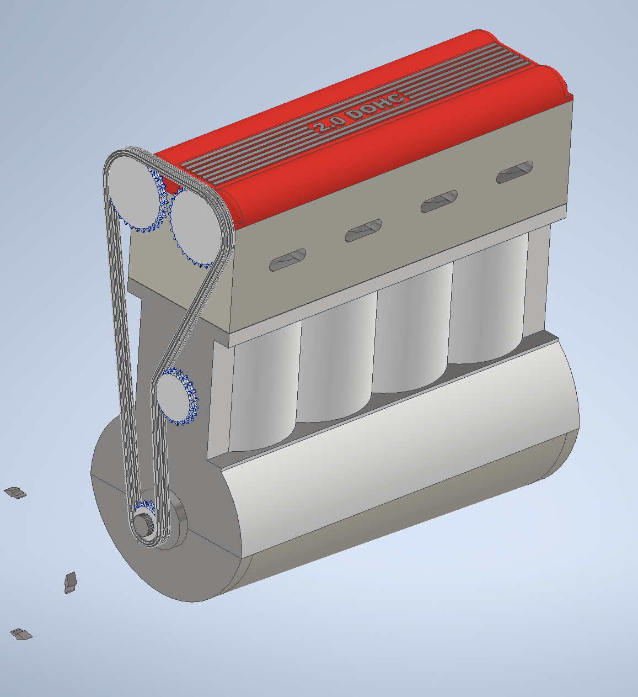
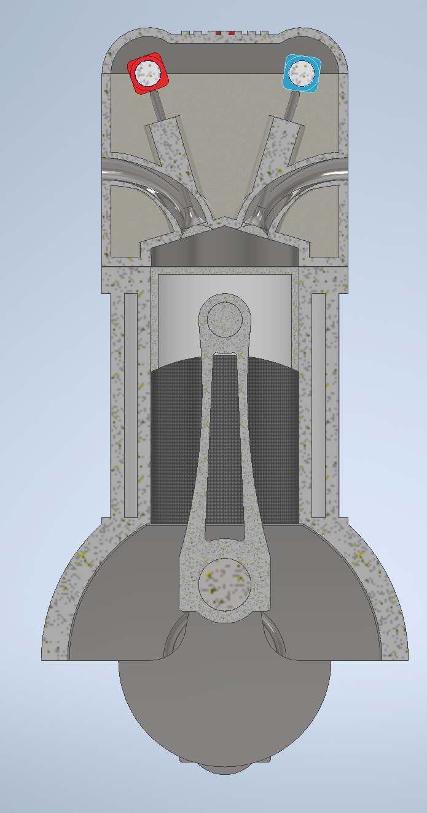
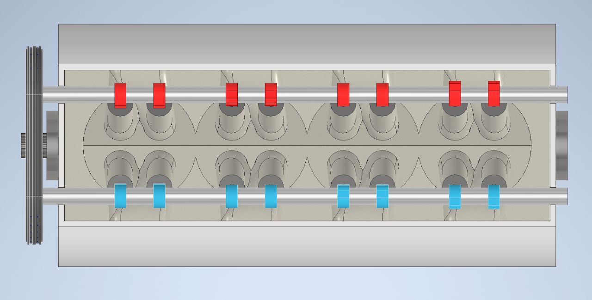
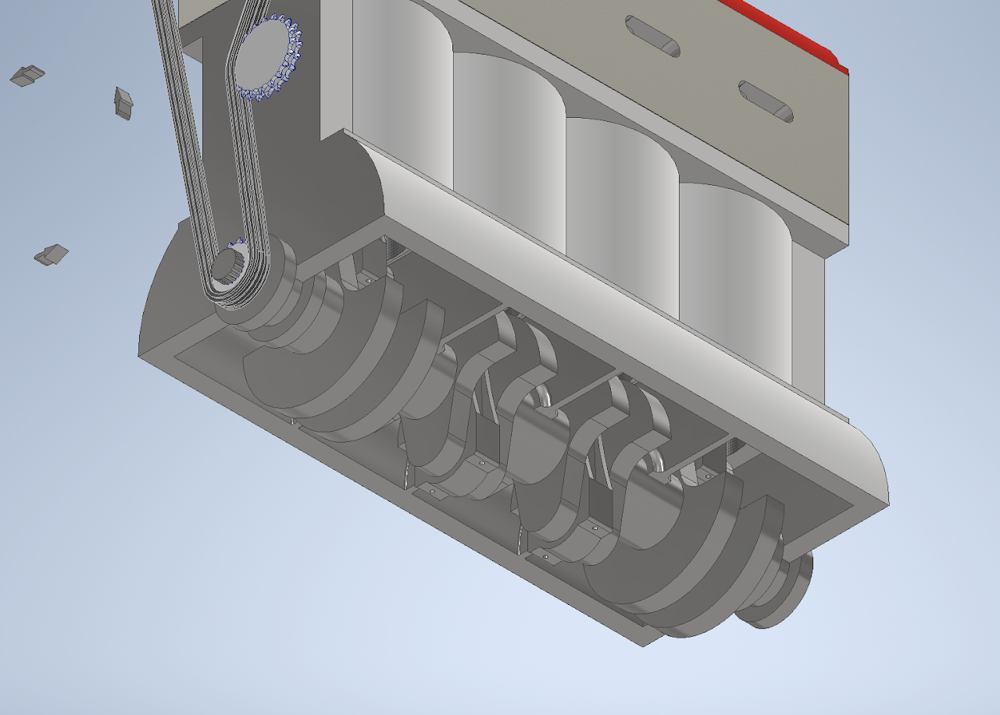
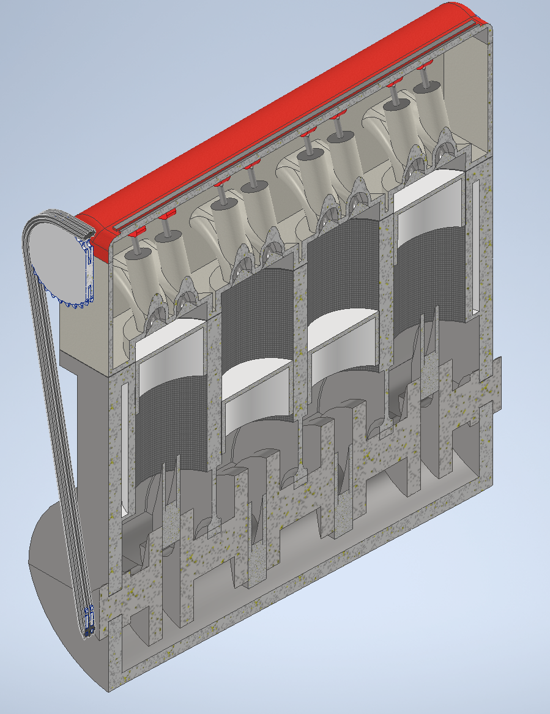
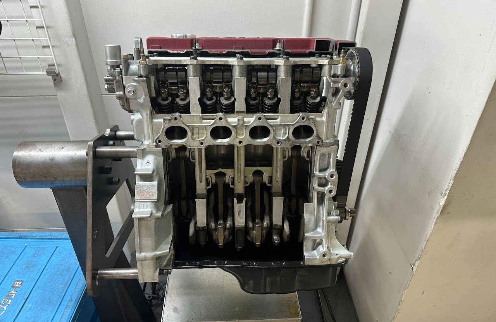
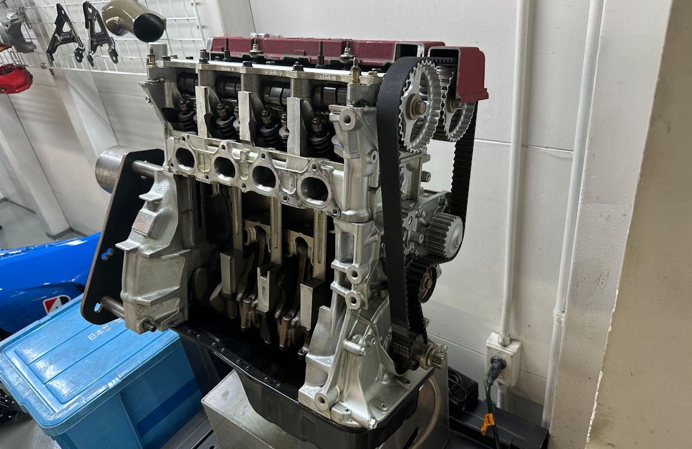

This 2.0 L, 4 cylinder engine was created to show proper engine timing and the 4 strokes of an internal combustion engine (at least for those used in cars, some other applications use two-stroke engines). It was created and animated in Inventor.



The red cam lobes control the exhaust valves and the blue lobes control the intake valves. Since the design has two camshafts that sit overtop of the cylinders and 16 total valves, this would be a DOHC (Dual Overhead Camshafts) 16V (16 valve) engine.


Below are two reference photos I took at the Spoon (famous Honda tuning company) TYPE ONE shop in Suginami (outside of Tokyo). This is a cross-section of a Honda B16A engine, which is also a DOHC 16V 4-cylinder.


Below is the animation I made in Inventor where you can see cylinder 4 go through the intake, compression, power, and exhaust strokes.